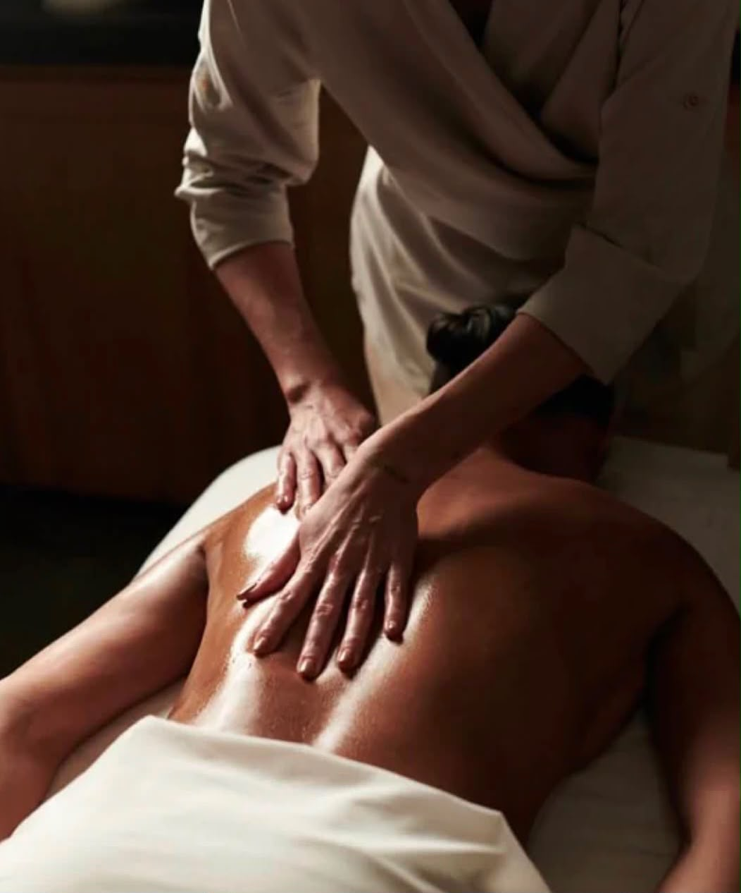
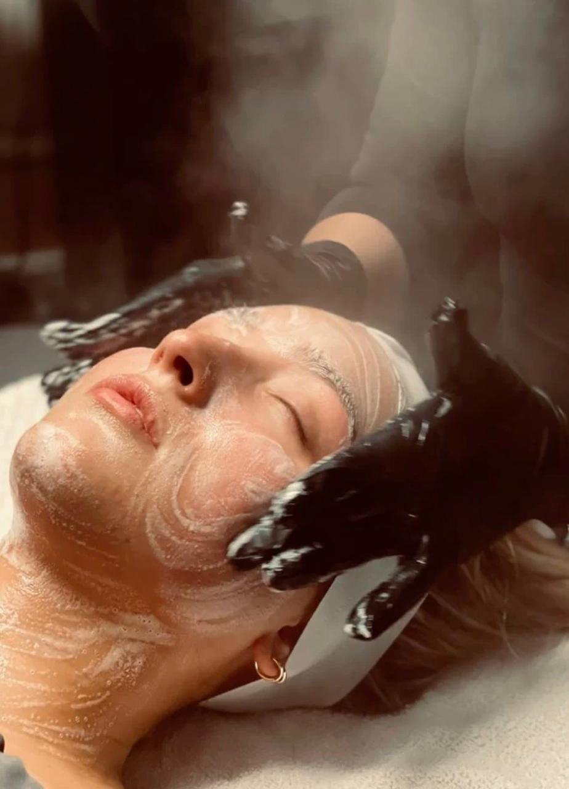
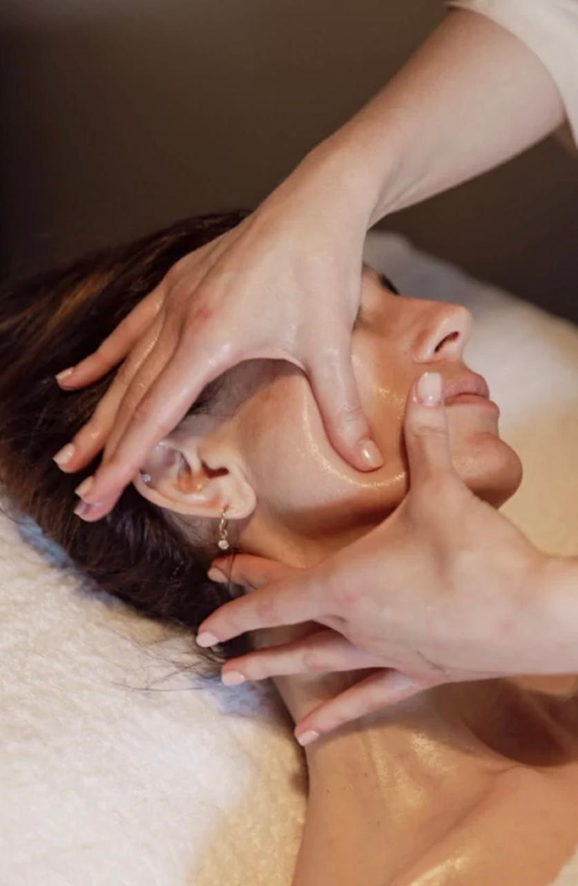
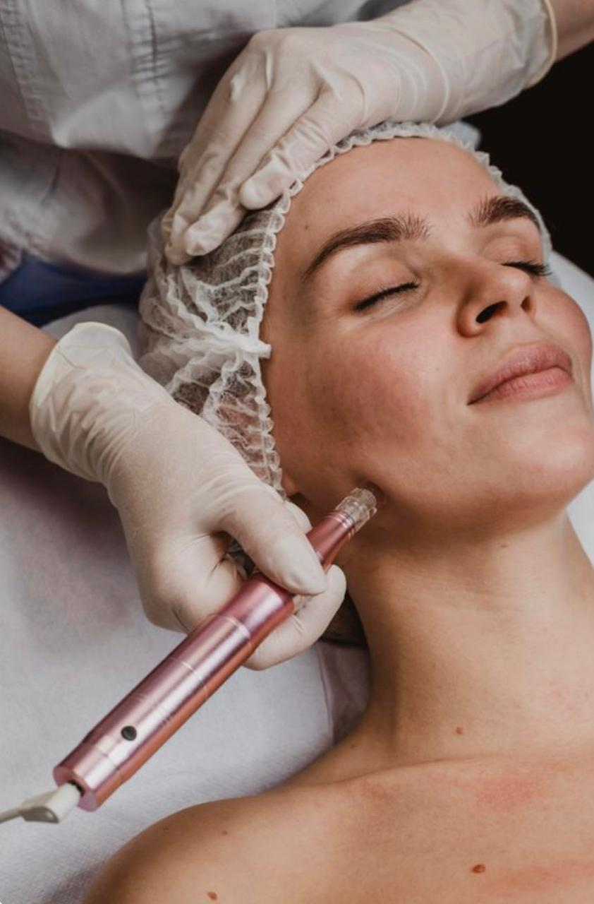
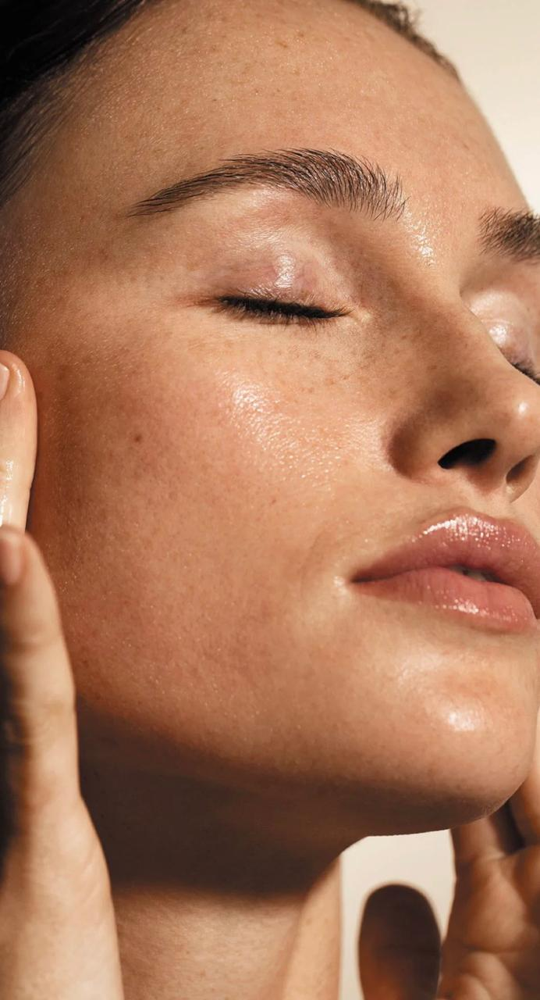
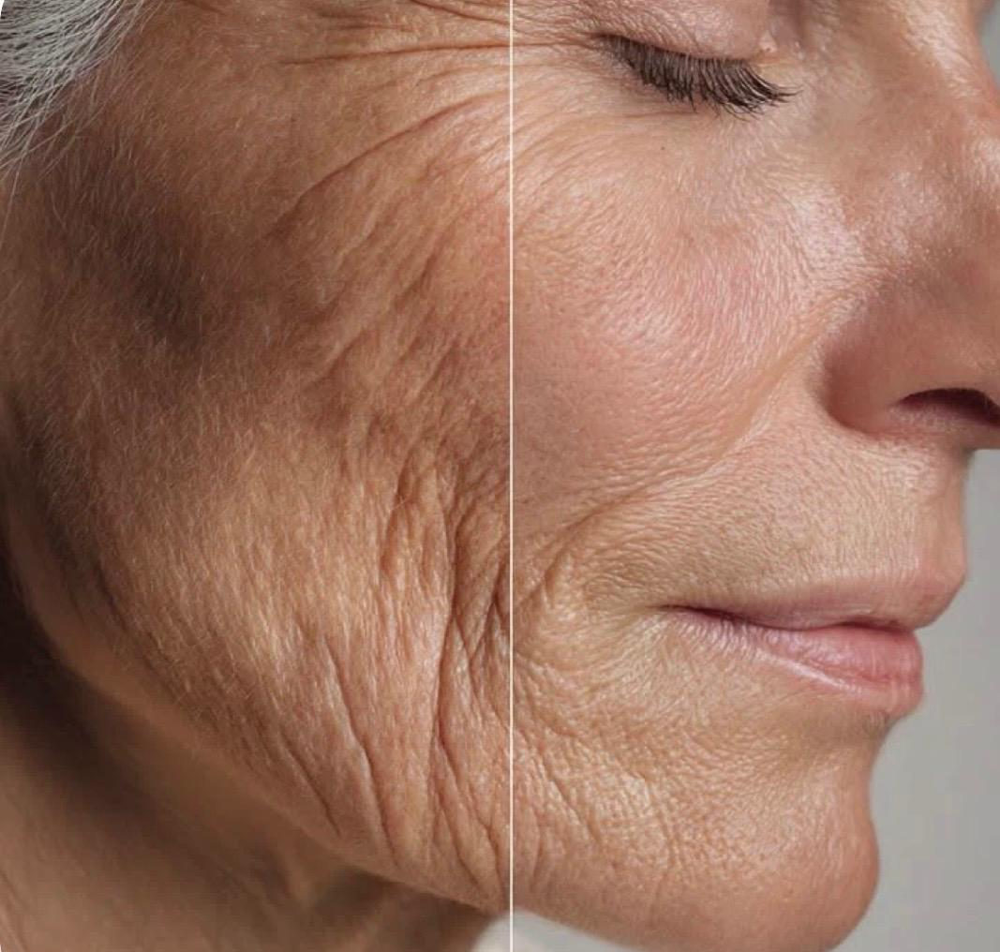
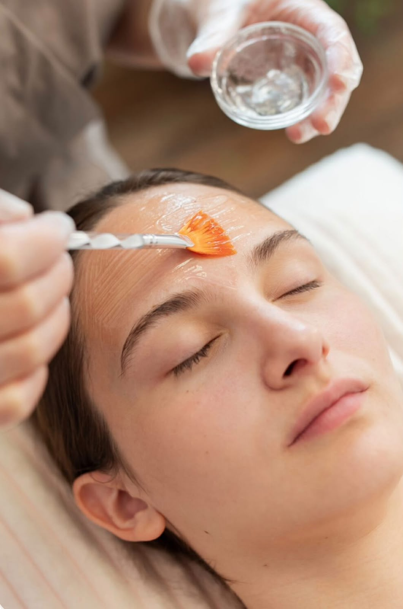
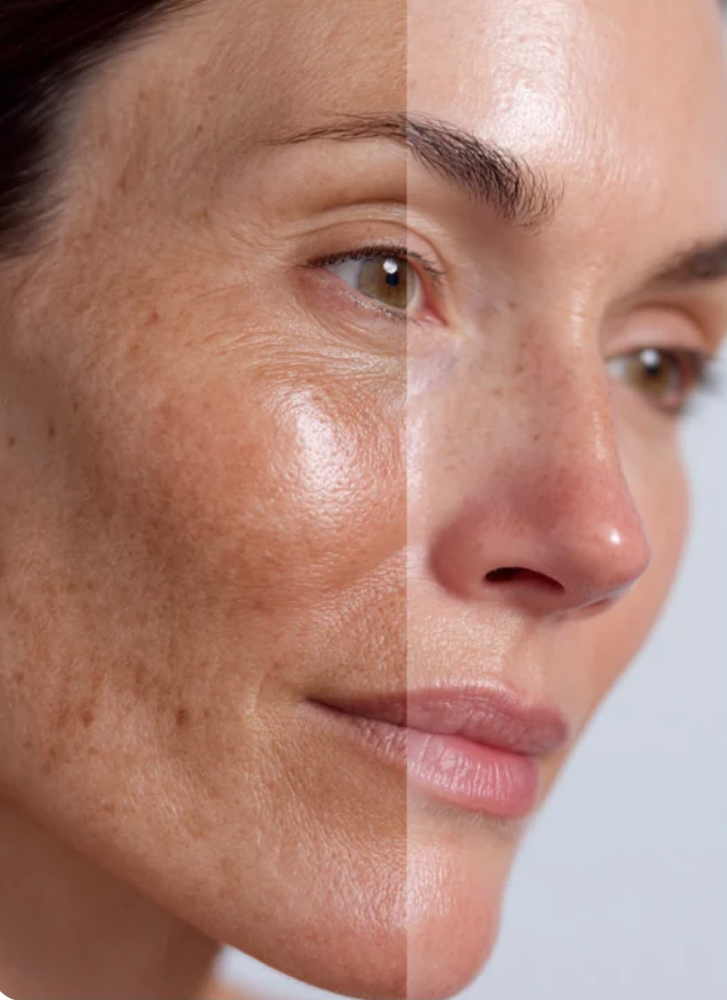
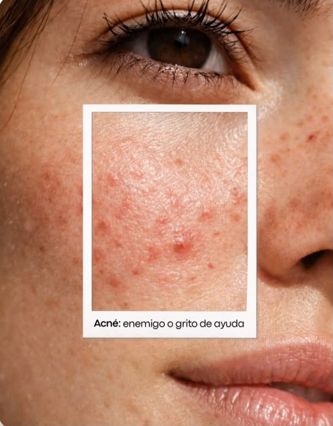

Nuestros tratamientos faciales están diseñados para mejorar la salud y apariencia de la piel mediante una valoración personalizada. Trabajamos con protocolos profesionales que ayudan a limpiar, hidratar, renovar y revitalizar el rostro, adaptándonos a las necesidades de cada tipo de piel.

Devuélvele firmeza y luminosidad a tu piel con nuestro tratamiento de tensado facial. Mediante un protocolo profesional y no invasivo, estimulamos la producción natural de colágeno para mejorar la elasticidad, redefinir el contorno del rostro y suavizar los signos del envejecimiento. Disfruta de una piel más firme, fresca y rejuvenecida, con resultados visibles y una experiencia relajante pensada para realzar tu belleza natural.

La limpieza facial profunda es un tratamiento esencial para mantener la piel sana y equilibrada. Ayuda a eliminar impurezas, células muertas, puntos negros, comedones y exceso de grasa acumulados en los poros, favoreciendo una piel más limpia y uniforme. Además, mejora la oxigenación de la piel, potencia la absorción de los productos de cuidado facial y contribuye a prevenir brotes de acné e imperfecciones. Es ideal para todo tipo de piel, especialmente aquellas con poros obstruidos, exceso de grasa o falta de luminosidad

Más que un tratamiento facial, es una experiencia diseñada para consentirte, relajarte y devolverle vitalidad a tu piel. Disfrutarás de un delicioso masaje facial, cervical y de cuero cabelludo que ayuda a liberar la tensión, estimular la circulación y promover una sensación de bienestar profundo. Finalizamos con un cuidado personalizado que deja tu piel radiante, fresca, hidratada y con un aspecto saludable, mientras disfrutas de un momento de relajación pensado exclusivamente para ti.

Nuestro tratamiento con microagujas estimula los procesos naturales de regeneración de la piel, favoreciendo la producción de colágeno y elastina para mejorar su firmeza, textura y luminosidad. Durante el procedimiento utilizamos viales profesionales seleccionados de forma personalizada según las necesidades de tu piel, potenciando los resultados de cada sesión. Es un tratamiento ideal para revitalizar el rostro, mejorar la calidad de la piel y devolverle un aspecto más saludable, uniforme y rejuvenecido.

Devuélvele a tu piel un aspecto más joven, saludable y revitalizado con nuestro tratamiento de ADN de Salmón (PDRN). Este innovador protocolo estimula los procesos naturales de regeneración de la piel, favoreciendo su reparación desde el interior y mejorando su calidad. Además, ayuda a hidratar profundamente, reafirmar la piel, unificar el tono y aportar una luminosidad natural.

Recupera una piel más lisa, firme y rejuvenecida con nuestro tratamiento BTX. Este innovador protocolo está diseñado para ayudar a disminuir la apariencia de líneas finas y arrugas, mejorando la firmeza, hidratación y calidad de la piel. Además, aporta luminosidad, suaviza la textura del rostro y favorece una apariencia más fresca, descansada y naturalmente rejuvenecida, sin perder la expresión natural del rostro.

l peeling químico es un tratamiento de renovación cutánea que ayuda a mejorar la calidad y apariencia de la piel mediante la aplicación de activos específicos según sus necesidades. Favorece la eliminación de células superficiales, estimula la renovación celular y permite obtener una piel más uniforme, luminosa y suave. Es un protocolo personalizado que puede ayudar a tratar diferentes alteraciones de la piel, logrando un rostro con aspecto más saludable y revitalizado.

Nuestro tratamiento despigmentante está diseñado para mejorar la apariencia de manchas y unificar el tono de la piel mediante un protocolo personalizado según las necesidades de cada rostro. Trabajamos con activos profesionales que ayudan a disminuir la apariencia de la pigmentación, revitalizar la piel y devolverle luminosidad, logrando un tono más uniforme y una piel con aspecto más saludable y radiante.

Tratamiento facial personalizado para controlar el acné, reducir la inflamación y regular el exceso de grasa. Ayuda a limpiar los poros, disminuir las imperfecciones, prevenir nuevos brotes y mejorar la textura y el aspecto general de la piel.